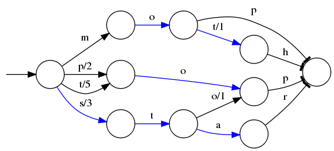

Elasticsearch

介绍
Elasticsearch 是一个分布式可扩展的实时搜索和分析引擎,一个建立在全文搜索引擎 Apache Lucene(TM) 基础上的搜索引擎.当然 Elasticsearch 并不仅仅是 Lucene 那么简单，它不仅包括了全文搜索功能，还可以进行以下工作:
- 分布式实时文件存储，并将每一个字段都编入索引，使其可以被搜索。
- 实时分析的分布式搜索引擎。
- 可以扩展到上百台服务器，处理PB级别的结构化或非结构化数据。
基本概念
先说Elasticsearch的文件存储，Elasticsearch是面向文档型数据库，一条数据在这里就是一个文档，用JSON作为文档序列化的格式，比如下面这条用户数据：
1 | { |
用Mysql这样的数据库存储就会容易想到建立一张User表，有balabala的字段等，在Elasticsearch里这就是一个文档，当然这个文档会属于一个User的类型，各种各样的类型存在于一个索引当中。这里有一份简易的将Elasticsearch和关系型数据术语对照表:
| 关系数据库 | Elasticsearch |
|---|---|
| 数据库 | 索引(Index) |
| 表 | 类型(type) |
| 行 | 文档(Docments) |
| 列(Columns) | 字段(Fields) |
一个 Elasticsearch 集群可以包含多个索引(数据库)，也就是说其中包含了很多类型(表)。这些类型中包含了很多的文档(行)，然后每个文档中又包含了很多的字段(列)。Elasticsearch的交互，可以使用Java API，也可以直接使用HTTP的Restful API方式，比如我们打算插入一条记录，可以简单发送一个HTTP的请求：
1 | PUT /megacorp/employee/1 |
索引
Elasticsearch索引的精髓：
一切设计都是为了提高搜索的性能
另一层意思：为了提高搜索的性能，难免会牺牲某些其他方面，比如插入/更新，否则其他数据库不用混了。前面看到往Elasticsearch里插入一条记录，其实就是直接PUT一个json的对象，这个对象有多个fields，比如上面例子中的name, sex, age, about, interests，那么在插入这些数据到Elasticsearch的同时，Elasticsearch还默默的为这些字段建立索引—倒排索引，因为Elasticsearch最核心功能是搜索。
什么是倒排索引?
继续上面的例子，假设有这么几条数据(为了简单，去掉about, interests这两个field):
| ID | Name | Age | Sex |
|---|---|---|---|
| 1 | Kate | 24 | Female |
| 2 | John | 24 | Male |
| 3 | Bill | 29 | Male |
D是Elasticsearch自建的文档id，那么Elasticsearch建立的索引如下:
Name:
| Term | Posting List |
|---|---|
| Kate | 1 |
| John | 2 |
| Bill | 3 |
Age:
| Term | Posting List |
|---|---|
| 24 | [1,2] |
| 29 | 3 |
Sex:
| Term | Posting List |
|---|---|
| Female | 1 |
| Male | [2,3] |
Posting List
Elasticsearch分别为每个field都建立了一个倒排索引，Kate, John, 24, Female这些叫term，而[1,2]就是Posting List。Posting list就是一个int的数组，存储了所有符合某个term的文档id。
通过posting list这种索引方式似乎可以很快进行查找，比如要找age=24的同学，爱回答问题的小明马上就举手回答：我知道，id是1，2的同学。但是，如果这里有上千万的记录呢？如果是想通过name来查找呢？
Term Dictionary
Elasticsearch为了能快速找到某个term，将所有的term排个序，二分法查找term，logN的查找效率，就像通过字典查找一样，这就是Term Dictionary。现在再看起来，似乎和传统数据库通过B-Tree的方式类似啊，为什么说比B-Tree的查询快呢？
Term Index
B-Tree通过减少磁盘寻道次数来提高查询性能，Elasticsearch也是采用同样的思路，直接通过内存查找term，不读磁盘，但是如果term太多，term dictionary也会很大，放内存不现实，于是有了Term Index，就像字典里的索引页一样，A开头的有哪些term，分别在哪页，可以理解term index是一颗树：
这棵树不会包含所有的term，它包含的是term的一些前缀。通过term index可以快速地定位到term dictionary的某个offset，然后从这个位置再往后顺序查找。

所以term index不需要存下所有的term，而仅仅是他们的一些前缀与Term Dictionary的block之间的映射关系，再结合FST(Finite State Transducers)的压缩技术，可以使term index缓存到内存中。从term index查到对应的term dictionary的block位置之后，再去磁盘上找term，大大减少了磁盘随机读的次数。
FST是什么？
FSTs are finite-state machines that map a term (byte sequence) to an arbitrary output.
假设我们现在要将mop, moth, pop, star, stop and top(term index里的term前缀)映射到序号：0，1，2，3，4，5(term dictionary的block位置)。最简单的做法就是定义个Map

圈表示一种状态
—>表示状态的变化过程，上面的字母/数字表示状态变化和权重
将单词分成单个字母通过圈和—>表示出来，0权重不显示。如果圈后面出现分支，就标记权重，最后整条路径上的权重加起来就是这个单词对应的序号。
FST以字节的方式存储所有的term，这种压缩方式可以有效的缩减存储空间，使得term index足以放进内存，但这种方式也会导致查找时需要更多的CPU资源。
压缩技巧
Frame Of Reference
Elasticsearch里除了上面说到用FST压缩term index外，对posting list也有压缩技巧。
增量编码压缩，将大数变小数，按字节存储
首先，Elasticsearch要求posting list是有序的(为了提高搜索的性能，再任性的要求也得满足)，这样做的一个好处是方便压缩，看下面这个图例：

原理就是通过增量，将原来的大数变成小数仅存储增量值，再精打细算按bit排好队，最后通过字节存储，而不是大大咧咧的尽管是2也是用int(4个字节)来存储。
Roaring bitmaps
联合索引
上面说了半天都是单field索引，如果多个field索引的联合查询，倒排索引如何满足快速查询的要求呢？
- 利用跳表(Skip list)的数据结构快速做“与”运算，或者
- 利用上面提到的bitset按位“与”
先看看跳表的数据结构：
将一个有序链表level0，挑出其中几个元素到level1及level2，每个level越往上，选出来的指针元素越少，查找时依次从高level往低查找，比如55，先找到level2的31，再找到level1的47，最后找到55，一共3次查找，查找效率和2叉树的效率相当，但也是用了一定的空间冗余来换取的。
假设有下面三个posting list需要联合索引：

如果使用跳表，对最短的posting list中的每个id，逐个在另外两个posting list中查找看是否存在，最后得到交集的结果。
如果使用bitset，就很直观了，直接按位与，得到的结果就是最后的交集。
总结和思考
Elasticsearch的索引思路:
将磁盘里的东西尽量搬进内存，减少磁盘随机读取次数(同时也利用磁盘顺序读特性)，结合各种奇技淫巧的压缩算法，用及其苛刻的态度使用内存。
所以，对于使用Elasticsearch进行索引时需要注意:
- 不需要索引的字段，一定要明确定义出来，因为默认是自动建索引的
- 同样的道理，对于String类型的字段，不需要分词的也需要明确定义出来，因为默认也是会分词的
- 选择有规律的ID很重要，随机性太大的ID(比如java的UUID)不利于查询
关于最后一点，个人认为有多个因素:
其中一个(也许不是最重要的)因素: 上面看到的压缩算法，都是对Posting list里的大量ID进行压缩的，那如果ID是顺序的，或者是有公共前缀等具有一定规律性的ID，压缩比会比较高；
另外一个因素: 可能是最影响查询性能的，应该是最后通过Posting list里的ID到磁盘中查找Document信息的那步，因为Elasticsearch是分Segment存储的，根据ID这个大范围的Term定位到Segment的效率直接影响了最后查询的性能，如果ID是有规律的，可以快速跳过不包含该ID的Segment，从而减少不必要的磁盘读次数。